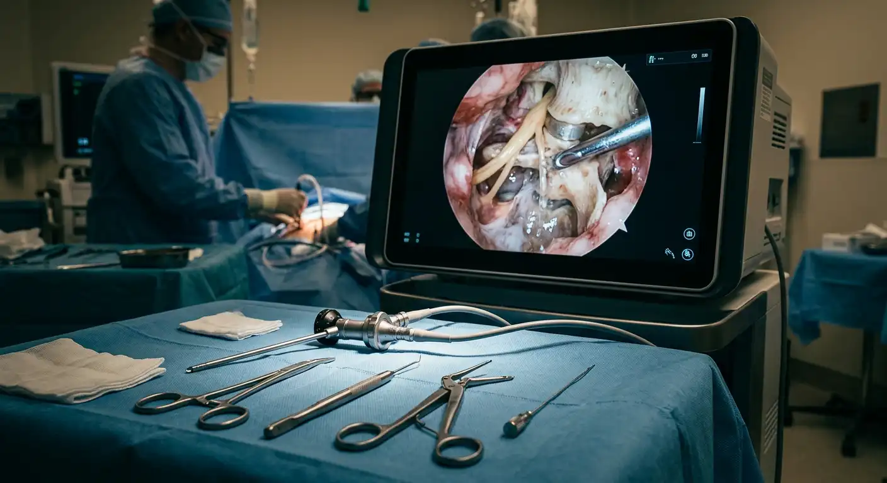
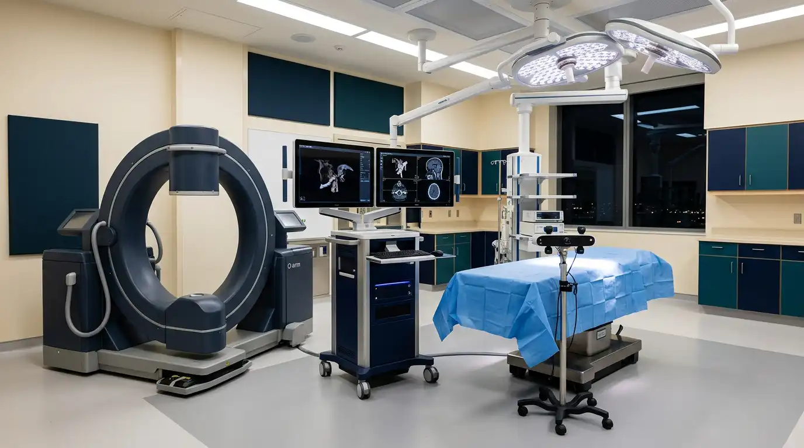
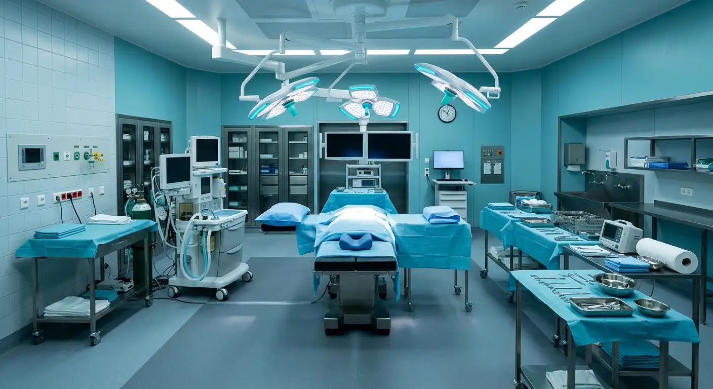

Advanced Spine & Orthopaedic Care
Specialist-led endoscopic spine surgery, orthopaedics and trauma care, with comprehensive dental care — delivered with careful, personal attention.
Our Approach
Specialised Care. Personalised Attention.
At Bhute Hospital, clinical decisions are made by specialists, informed by careful assessment and appropriate imaging, and shaped around each patient's condition, circumstances, and preferences.
- Specialist-led clinical evaluation
- Minimally invasive options for selected patients
- Coordinated orthopaedic, trauma, and dental care
Specialities
Four Areas of Focused Expertise
Endoscopic Spine
Our primary clinical focus. Endoscopic and minimally invasive spine care, including Unilateral Biportal Endoscopy (UBE), navigation-supported procedures, and assessment of complex and revision spine conditions.
Explore endoscopic spine care 02Orthopaedics
Care for bones, joints, and musculoskeletal conditions, from assessment through treatment and rehabilitation planning.
Explore orthopaedics 03Trauma & Accident Care
Fracture and musculoskeletal injury management with clear assessment and planned follow-up.
Explore trauma care 04Dental Care
Comprehensive, modern dental care led by Dr. Trupti Bhute, with an emphasis on prevention and clear treatment planning.
Explore dental care
Spine Surgeon
Dr. Abhinav Bhute
MBBS · MS Orthopaedics · Fellowship in Spine Surgery
Dr. Abhinav Bhute is a spine surgeon with training in orthopaedics and fellowship training in spine surgery. His clinical interests include endoscopic and minimally invasive techniques, UBE, navigation-supported procedures, and the assessment of complex and revision spine conditions. Treatment recommendations are based on individual clinical evaluation, imaging, and patient needs.
- Endoscopic Spine Surgery
- Unilateral Biportal Endoscopy (UBE)
- Minimally Invasive Spine Surgery
- O-arm Navigation
- Complex and Revision Spine Surgery
- Orthopaedic and musculoskeletal assessment
Clinical Approach
Modern Techniques, Carefully Chosen
The choice of technique always depends on the diagnosis and clinical assessment. These describe our areas of clinical approach; availability of specific equipment is confirmed before any procedure is planned.

Endoscopic Spine Surgery
Minimally invasive techniques that may be appropriate for selected patients, where clinically indicated.

O-arm Navigation
Intraoperative imaging and navigation that support precision for selected procedures.
Advanced Endoscopic Systems
High-definition visualisation supporting careful, minimally invasive spine procedures.

Modern Operating Theatre
A controlled, carefully prepared surgical environment for planned procedures.

Dental Surgeon
Dr. Trupti Bhute
BDS · MBA
Dr. Trupti Bhute is a dental surgeon focused on comprehensive, modern dental care. Her approach emphasises careful assessment, clear communication, preventive care, and treatment planning suited to each patient's needs.
Learn about dental care at Bhute HospitalWhy Bhute Hospital
Care Built Around the Patient
Specialist-led Care
Every clinical pathway is led by a qualified specialist.
Advanced Technology
Modern clinical approaches, chosen where clinically appropriate.
Minimally Invasive Expertise
Endoscopic and minimally invasive options for selected patients.
Patient-Centred Treatment
Plans built around individual assessment and clear communication.
Integrated Orthopaedic & Trauma Care
Coordinated injury and musculoskeletal pathways under one roof.
Comprehensive Dental Care
Modern dentistry with an emphasis on prevention and planning.
Our Primary Focus
Centre for Advanced Endoscopic Spine Care
Our spine care pathway begins with a careful clinical assessment. Many spinal conditions are managed without surgery; when surgery may be appropriate, endoscopic and minimally invasive techniques can be considered for selected patients, depending on clinical assessment.
Conditions assessed include disc problems, nerve compression, sciatica symptoms, and complex or revision spine conditions.
What to Expect
Your Patient Journey
Consultation
A specialist consultation to understand your history, symptoms, and concerns.
Imaging & Assessment
Appropriate investigations arranged as clinically indicated.
Personalised Treatment
Options explained clearly; treatment planned around your assessment.
Recovery & Follow-up
Guided recovery with planned reviews and answering your questions.
Patient Education
Understanding Spine Health
Clear, non-diagnostic explanations to support your conversation with the doctor. These articles are for general education only.
What causes back pain?
Common contributors and when evaluation matters.
What is a slipped disc?
What disc prolapse means in plain language.
When does sciatica need surgery?
Most sciatica improves without surgery; here is when review matters.
What is endoscopic spine surgery?
A minimally invasive approach for selected conditions.
What is UBE?
Unilateral Biportal Endoscopy explained simply.
When is spine surgery necessary?
Surgery is one option among several, decided by assessment.
Recovery after spine surgery
What guided recovery typically involves.
Patient Experiences
In Their Own Words
Patient experiences will be published only with appropriate consent.
Our Hospital
A Calm, Considered Environment


Images shown are representative illustrations pending authentic hospital photography.
Appointments
Request an Appointment
Send a request and our team will contact you to confirm. Please do not share sensitive medical information through this form.